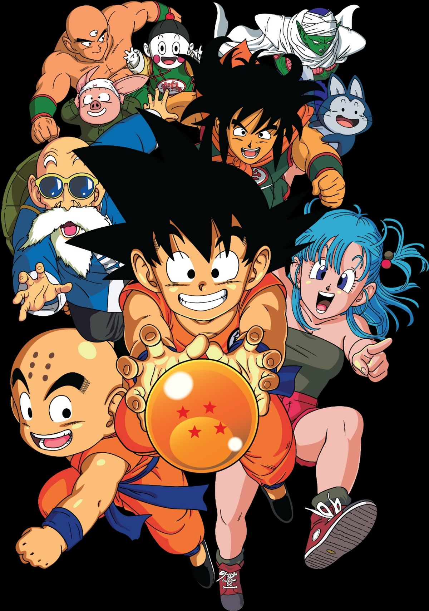
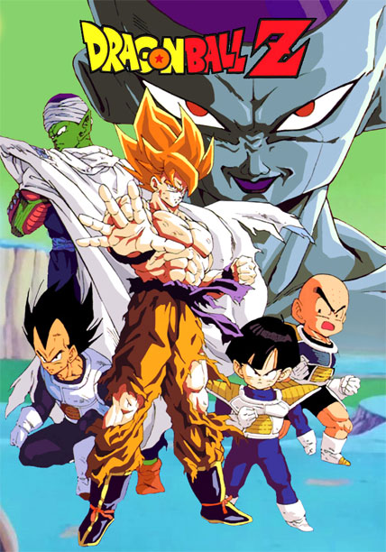
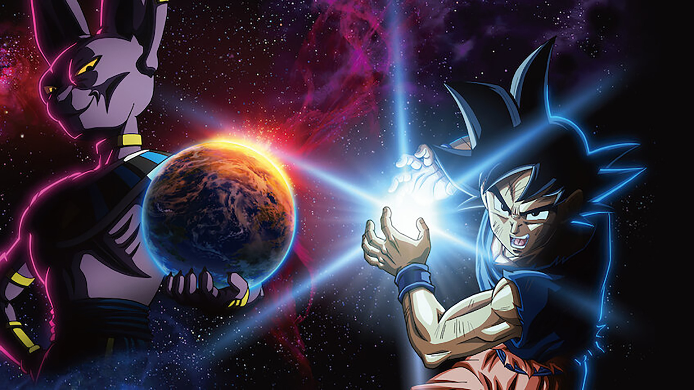
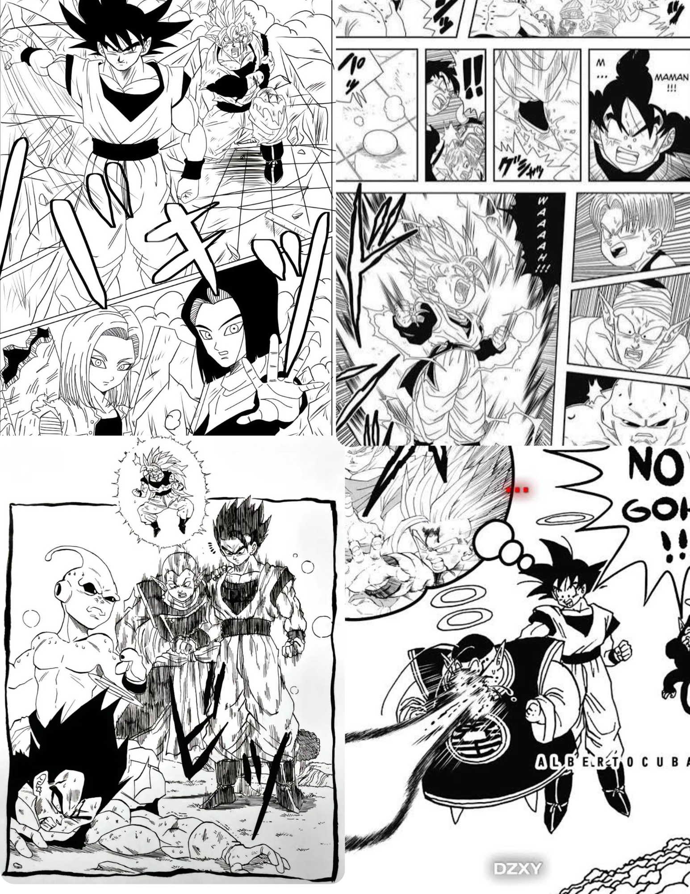

E se Goku tivesse morrido da doença do coração?
Na linha do tempo de Trunks, é o que acontece: Goku morre antes dos androides chegarem e o futuro fica sem seu maior defensor.
A história de Dragon Ball, de Goku criança ao Torneio do Poder: sagas, vilões e um quiz para testar o que você lembra.
Ler o resumoFranquia japonesa de mangá, anime e jogos criada por Akira Toriyama. Conhecida por batalhas, transformações e personagens marcantes, conta a história de Son Goku, que enfrenta aventuras e lutas para proteger amigos e seu lar, sempre aprendendo a superar desafios e a ser forte mesmo quando tudo parece perdido. São mais de 40 anos de história.

A infância de Goku
Aventura, humor e artes marciais: Goku conhece Bulma e parte em busca das sete Esferas do Dragão.

Saiyajins e ameaças espaciais
A série muda para batalhas de escala planetária e revela a origem alienígena de Goku.

Deuses e multiverso
Passa-se nos dez anos de paz antes do fim de DBZ e leva a história ao nível divino.
E se a história tivesse seguido outro caminho?

Na linha do tempo de Trunks, é o que acontece: Goku morre antes dos androides chegarem e o futuro fica sem seu maior defensor.
O desejo de Freeza em Namekusei era a imortalidade. Com o Shenlong de Namek, ele seria quase impossível de parar.
Cell queria ser o guerreiro perfeito. Sem o sacrifício de Goku e a virada de Gohan, o Torneio de Cell teria outro final.
Quinze perguntas sobre as sagas. Cada resposta mostra na hora se você acertou.